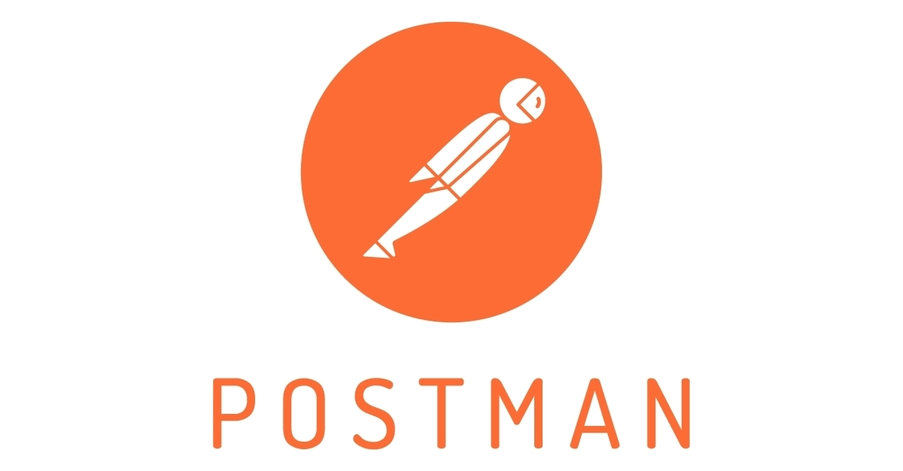

WU-E26A · RACE 1 · 28. august 2026
JavaScript
på serveren
Client/server · HTTP · Node.js · Express.js
Dagens mål
I skal kunne følge en request — og selv svare på den
01Forklarclient/server og request/response
02KørJavaScript med Node.js
03Bygen Express-server med routes
04TestGET og POST i browser/Postman
I dag bygger I
Én server — flere svar
Terminal
GET / → 200 "Hello Express"
GET /about → 200 "Om AMAbot"
GET /api/jokes → 200 [{ ... }]
POST /api/jokes → 201 { ... }
GET /ukendt → 404 "Ikke fundet"
Det hele begynder med at matche metode + URL.
Hej — jeg er Rasmus
Jeg underviser i det, der sker mellem UI og data
- JavaScript, React, Node.js og BaaS
- Webapps med blik for UI og UX
- “I speak JavaScript”
01
Client/server
Browseren spørger.
Serveren beslutter.
Kommunikation er ikke magi — det er beskeder med en fast struktur.
Server-side
Når I klikker, søger eller sender en formular, starter browseren en samtale
kliksøgningformularfetch()
Client-server-modellen
To roller — én samtale
ClientBrowserStarter requesten
HTTP requestGET /api/jokes
HTTP response200 OK + JSON
ServerNode.jsBehandler og svarer
Ansvarsfordeling
Frontend viser oplevelsen — backend håndterer regler og data
Client / frontend
- viser UI
- indsamler input
- sender requests
- viser serverens svar
Server / backend
- validerer input
- anvender forretningslogik
- læser og gemmer data
- sender responses
Grænsen er en arkitekturbeslutning — ikke en naturlov.
Request/response-cyklussen
Hver request skal ende i et response
- 1Client opretter request
- 2Server matcher URL og metode
- 3Kode behandler requesten
- 4Server sender response
- 5Client bruger svaret
02
HTTP
Webbets fælles
beskedformat
Metode, URL, headers, body og statuskode fortæller, hvad der skal ske.
Hypertext Transfer Protocol
HTTP flytter mere end HTML
HTMLCSSJavaScriptJSONbilledervideo
Browseren samler ofte én side fra mange separate requests.
Anatomi · request
Clienten fortæller, hvad den vil have
POST /api/jokes HTTP/1.1
Host: localhost:3000
Content-Type: application/json
{
"text": "Hvorfor krydsede Node vejen?"
}
- Metode
- POST
- Path
- /api/jokes
- Headers
- metadata om beskeden
- Body
- data, der sendes med
Anatomi · response
Serveren svarer med status, headers og indhold
HTTP/1.1 201 Created
Content-Type: application/json
{
"id": 42,
"text": "Hvorfor krydsede Node vejen?"
}
- Status
- 201 Created
- Headers
- hvordan svaret skal tolkes
- Body
- HTML, JSON, tekst eller andet
Statuskoder
Statuskoden er serverens korte konklusion
2xxDet lykkedes200 OK · 201 Created
4xxRequesten kan ikke opfyldes400 Bad Request · 404 Not Found
5xxServeren fejlede500 Internal Server Error
Miniøvelse · 8 min.
Find requesten i Network-panelet
- Åbn en webside og DevTools → Network
- Genindlæs siden
- Vælg dokument-requesten
- Find metode, URL, status og Content-Type
Fortæl din sidemakkerHvad bad browseren om — og hvad fik den tilbage?
03
Node.js
JavaScript uden
for browseren
Definition
Node.js er et runtime environment — ikke et framework
JavaScript+V8+Node API’er=programmer uden browser
Det giver JavaScript adgang til fx filer, netværk, processer og serverfunktioner.
Samme sprog · forskellige miljøer
JavaScript får forskellige superkræfter
| Browser | Node.js |
|---|
document og DOM | process og operativsystem |
| events fra UI | events fra netværk og filer |
| Web APIs | Node standardbibliotek |
| sandbox hos brugeren | kører på computer/server |
Hello Node.js
Første program: gem, kør, se output
// index.js
const course = "Webudvikling";
console.log(`Hej ${course}!`);
$ node index.js
Hej Webudvikling!
Ingen HTML. Ingen browser. Kun JavaScript og et runtime.
Moduler
Del kode op — og importér det, I har brug for
// math.js
export function add(a, b) {
return a + b;
}
// index.js
import { add } from "./math.js";
console.log(add(2, 3)); // 5
ES modules kræver typisk "type": "module" i package.json.
Asynkron I/O
Node kan vente på I/O uden at sætte alt andet på pause
Start opgave→Vent på fil/netværk↘Arbejd videre↗Håndtér resultat
Det passer godt til apps med mange samtidige netværks- og databaseoperationer.
En vigtig tilladelse
I skal ikke forstå alt i dag
Følg requesten. Kør koden. Ændr én ting. Kør igen.
npm
npm forbinder projektet med JavaScript-økosystemet
1Registrypakker, andre har udgivet
2CLInpm install og scripts
3package.jsonprojektets metadata og dependencies
Et Node-projekt
Fire ting I skal kunne genkende
my-server/
├── node_modules/ # installerede pakker
├── public/ # statiske filer
├── index.js # vores serverkode
├── package.json # scripts + dependencies
└── package-lock.json # låste versioner
Commit: kode, package.json og lockfil
Ignorér: node_modules/
Genskab: npm install
Øvelse 1
Hello Node.js
- Opret en ny projektmappe
- Kør
npm init -y
- Tilføj
"type": "module"
- Opret
index.js og kør den med Node
Åbn opgaven ↗
04
Node HTTP
Byg serveren
uden Express
Først ser vi mekanikken. Bagefter lader vi Express fjerne gentagelserne.
En server med Node
createServer giver os request og response
import { createServer } from "node:http";
const server = createServer((request, response) => {
response.statusCode = 200;
response.setHeader("Content-Type", "text/plain; charset=utf-8");
response.end("Hej fra Node.js!");
});
server.listen(3000, () => {
console.log("Serveren kører på http://localhost:3000");
});
Request-objektet
Hvad bad clienten om?
console.log(request.method); // "GET"
console.log(request.url); // "/about"
console.log(request.headers); // { ... }
Hvilken metode?Hvilken URL?Hvilke headers?Er der en body?
Response-objektet
Hvordan skal serveren svare?
response.statusCode = 200;
response.setHeader("Content-Type", "application/json");
response.end(JSON.stringify({ message: "Hej" }));
Hvilken status?Hvilken content type?Hvilken body?Hvornår afsluttes svaret?
Routing — manuelt
Uden framework matcher vi selv metode og URL
if (request.method === "GET" && request.url === "/") {
response.end("Forside");
} else if (request.method === "GET" && request.url === "/about") {
response.end("Om AMAbot");
} else {
response.statusCode = 404;
response.end("Ikke fundet");
}
Det virker — men bliver hurtigt svært at læse og udvide.
Øvelse 2
Hello HTTP Module
- Start en server på port 3000
- Send tekst fra
/
- Tilføj mindst én ekstra URL
- Returnér 404 fra ukendte URLs
Åbn opgaven ↗
En client uden UI
Postman lader os teste API’et direkte
- vælg HTTP-metode
- skriv URL
- tilføj headers og body
- inspicér response

05
Express.js
Mindre plumbing.
Tydeligere routes.
Express lægger routing og middleware oven på Node.js.
Hvorfor Express?
Samme serveridé — mindre gentagelse
Node HTTPif (request.method === "GET" &&
request.url === "/about") {
response.end("Om AMAbot");
}
→
Expressapp.get("/about", (req, res) => {
res.send("Om AMAbot");
});
Projektsetup
Installér Express som dependency
mkdir hello-express
cd hello-express
npm init -y
npm install express
{
"type": "module",
"scripts": {
"dev": "node --watch index.js"
}
}
node --watch genstarter processen, når filerne ændres.
Hello Express
Fem linjer etablerer serverens grundform
import express from "express";
const app = express();
app.get("/", (req, res) => {
res.send("Hello Express!");
});
app.listen(3000, () => {
console.log("Serveren kører på http://localhost:3000");
});
Express request/response
Express gør cyklussen konkret i koden
GET /about→app.get("/about", handler)→res.send("Om AMAbot")
reqdet, clienten sendteresdet, serveren sender tilbage
Routing
En route er kombinationen af metode og path
GET+/api/jokes+handler=route
app.get("/api/jokes", (req, res) => {
res.json(jokes);
});
GET routes
Forskellige URLs kan give forskellige svar
GET /forside
GET /aboutom projektet
GET /api/jokesalle jokes som JSON
app.get("/api/jokes", (req, res) => {
res.status(200).json([
{ id: 1, text: "404: Joke not found" }
]);
});
POST + JSON
Middleware gør request-body tilgængelig som JavaScript
app.use(express.json());
app.post("/api/jokes", (req, res) => {
const newJoke = {
id: crypto.randomUUID(),
text: req.body.text
};
res.status(201).json(newJoke);
});
express.json() skal registreres før routes, der bruger req.body.
Middleware
Funktioner i rækkefølge — før det endelige response
request→logging→JSON parsing→route handler→response
app.use((req, res, next) => {
console.log(req.method, req.url);
next();
});
Middleware skal sende et response eller kalde next().
Statiske filer
Express kan servere HTML, CSS, JavaScript og billeder direkte
app.use(express.static("public"));
public/
├── index.html
├── styles.css
├── app.js
└── images/
└── logo.svg
public er filesystem-mappen — men er ikke en del af URL’en.
Fallback route
Hvis intet matcher, skal serveren stadig svare
app.use((req, res) => {
res.status(404).json({
error: "Route not found"
});
});
Placér den sidstExpress gennemgår middleware og routes i den rækkefølge, de registreres.
Øvelse 3
Getting Started with Express.js
- Installér Express og start serveren
- Lav routes til
/ og /about
- Returnér JSON fra
/api/jokes
- Tilføj en 404-fallback
Åbn opgaven ↗
Hands-on · byg selv
Lav en lille AMAbot-server med mindst fire routes
GET /intro til jeres bot
GET /api/questionsreturnér alle spørgsmål
GET /api/questions/:idreturnér ét spørgsmål
POST /api/questionsmodtag et nyt spørgsmål
Test alle routes i browser eller Postman. Dokumentér metode, URL, status og response.
Definition of done
Serveren er ikke færdig, før I kan vise dens adfærd
- Serveren starter uden fejl
- Mindst tre forskellige paths giver forskellige svar
- JSON-responses har passende statuskoder
- Ukendte routes giver 404
- En anden gruppe kan teste løsningen ud fra jeres instruktion
Arbejd videre
Materialerne følger samme progression
Opsamling
Kan I forklare de fem led med jeres egne ord?
client→request→route + middleware→response→client
Hvad er Node.js?
Hvad tilføjer Express?
Hvordan matches en route?
Hvorfor betyder rækkefølgen noget?
Næste skridt
Byg én request
ad gangen
Kør · test · læs fejlen · ændr · kør igen
Og ja — der er fredagsbar i Basement efter undervisningen 🎉